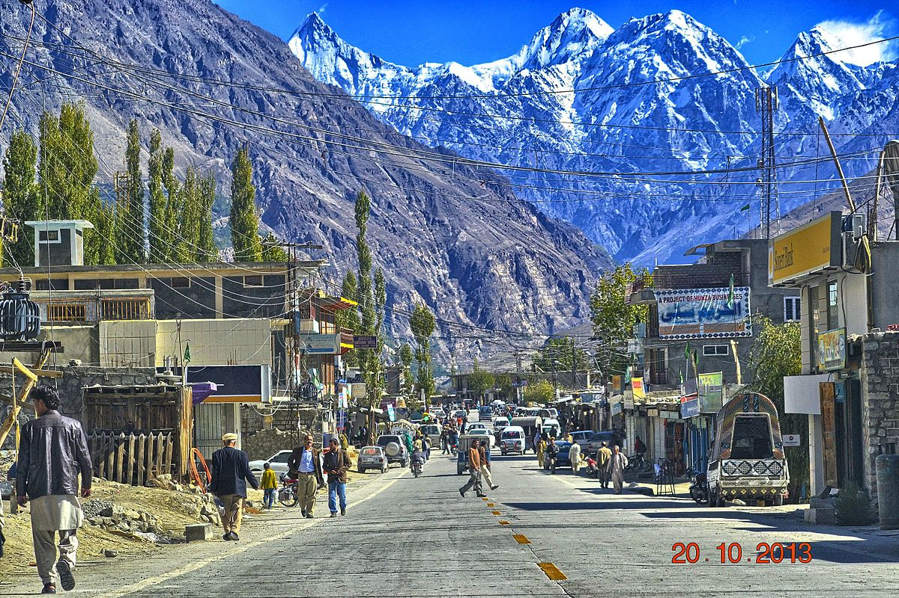
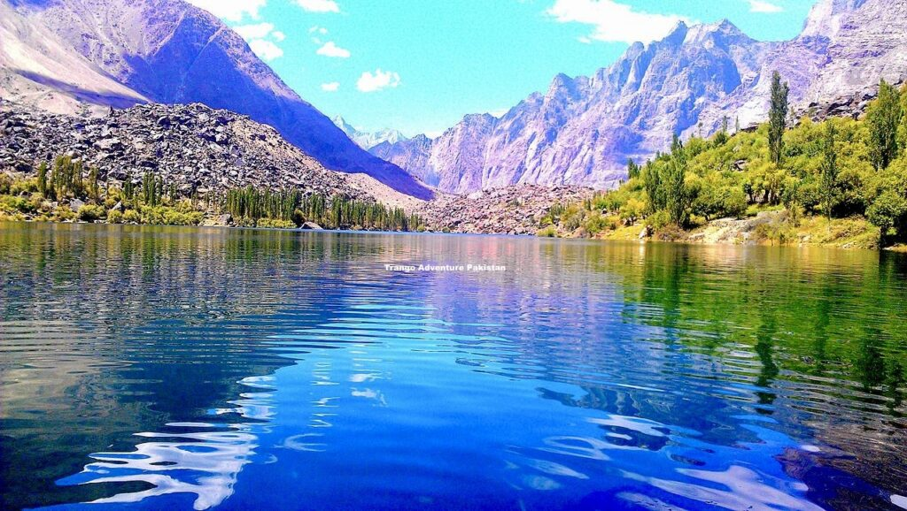

Articles on Northern Areas
Hunza Valley
Hunza Valley is known for its breathtaking landscapes, peaceful culture, and stunning mountains. A must-visit destination.
Skardu
Skardu offers crystal-clear lakes, cold deserts, and some of the world’s highest peaks. It's a paradise for trekkers.
Naran Kaghan

Naran Kaghan is famous for Saif-ul-Malook Lake, lush green meadows, and scenic beauty. Perfect for summer travel.